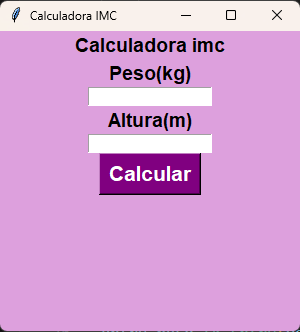

En esta calculadora, se utiliza una función para calcular el Índice de Masa Corporal (IMC) a partir del peso y la altura ingresados por el usuario. La función está definida para recibir estos valores, aplicar la fórmula correspondiente y mostrar el resultado en pantalla. Además, permite clasificar el estado de la persona (bajo peso, normal, sobrepeso u obesidad).
Una función puede recibir datos de entrada llamados parámetros y devolver un resultado, lo que facilita la organización y reutilización del código.

def calcularImc():
peso = float(entry_peso.get())
altura = float(entry_altura.get())
if altura <= 0 or peso <= 0:
messagebox.showerror("Error", "Valores inválidos")
return
imc = peso / (altura ** 2)
if imc < 18.5:
estado = "Peso Bajo"
elif imc < 24.9:
estado = "Peso Normal"
elif imc < 29.9:
estado = "Sobrepeso"
else:
estado = "Obesidad"
resultado.set(f"IMC: {imc:.2f} - {estado}")
⬅ Volver